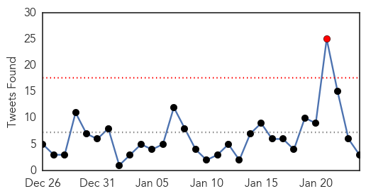
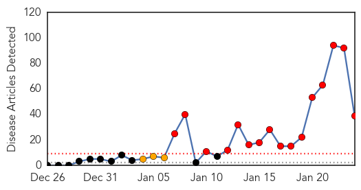

Ebola
30-Day Web Trend
1 alerts, 0 warnings

30-Day Twitter Trend
0 alerts, 0 warnings

Article Locations

Article Confidences

Top Articles:
- 1.000
- Flu, norovirus, Ebola, oh my!
- 1.000
- Tide turning in Ebola fight after hard lessons
- 1.000
- Ebola vaccine heads to Liberia for tests even as crisis eases
- 1.000
- Tide turning in Ebola fight after hard lessons
- 1.000
- Ebola outbreak easing, but little preparation for next one
- 1.000
- Tide turning in Ebola fight after hard lessons
- 1.000
- Ebola War Finally Being Won After Hard Lessons
- 1.000
- Tide turning in Ebola fight after hard lessons
- 1.000
- Three Hundred Trial Doses of Ebola Virus Vaccines are Already In Liberia Right Now For Health Care Personnel Use Initially, according to WHO.
- 1.000
- Tide turning in Ebola fight after hard lessons
- 1.000
- Tide turning in Ebola fight after hard lessons
- 1.000
- Tide turning in Ebola fight after hard lessons
- 1.000
- Tide turning in Ebola fight after hard lessons
- 1.000
- Just five Ebola cases left in Liberia
- 0.999
- Just five Ebola cases left in Liberia
- 0.999
- The world is closer to having a real weapon to fight Ebola
- 0.999
- Just five Ebola cases left in Liberia: government
- 0.999
- Just five Ebola cases left in Liberia: government
- 0.998
- On Ebola front line, first glimpse of end to epidemic
- 0.998
- Just Five Ebola Cases Left in Liberia — Naharnet
- 0.998
- U.N. says tide turning in Ebola fight
- 0.998
- Reuters Health News Summary
- 0.998
- Just five Ebola cases left in Liberia: UN
- 0.998
- Ebola Almost Eradicated in Liberia, Vaccine Expected To Hit Next Week
- 0.997
- Ebola Outbreak Latest News 2015: Experimental Ebola Vaccine Shipped to Liberia
- 0.997
- Science Journal: Just 5 Ebola cases left in Liberia
- 0.996
- Experimental Vaccine Shows Promise As It Arrives In Liberia
- 0.996
- Tide turning in Ebola fight
- 0.996
- Focus shifts as Ebola outbreak slows
- 0.995
- UN health agency to hold special weekend session on Ebola; warns against donor fatigue
- 0.995
- Anger, mistrust in Guinea villages hinders battle to beat Ebola
- 0.994
- Kenya : Ebola experts say 16 other bat viruses could infect man
- 0.994
- Scottish nurse makes full recovery from Ebola
- 0.993
- Just five Ebola cases left in Liberia, government says
- 0.992
- Ebola experts say 16 other bat viruses could infect man
- 0.992
- British Ebola nurse out of hospital
- 0.992
- CHEO doctor headed to Sierra Leone to join Ebola fight
- 0.992
- EMU alumni in Liberia, Sierra Leone tap local resilience and resourcefulness in curbing Ebola
- 0.990
- New Ebola Vaccine, Drug Trials to Start in West Africa
- 0.988
- British Ebola nurse discharged from hospital
- 0.988
- Schools reopening as W. Africa turns page on Ebola epidemic – BorneoPost Online
- 0.988
- British nurse now Ebola free
- 0.987
- Ebola experts say 16 other bat viruses could infect man
- 0.987
- Ebola experts say 16 other bat viruses could infect man
- 0.985
- U.N. Plans Summer Distribution: Scientists at Local Firm Say Ebola Pill Works
- 0.985
- Five Ebola cases left in Liberia – Government
- 0.985
- Liberia Ebola vaccine trial challenging as cases tumble
- 0.982
- China's Efforts Against Ebola Applauded
- 0.980
- Federal judge overturns Alabama's same-sex marriage ban
- 0.980
- Ebola vaccine to be tried in Liberia
Showing top 50 articles...
Top Tweets:
- 0.921
- Ebola Update: 21,759 confirmed, probable and suspected cases reported in 3 most affected countries, with 8,668 deaths. EbolaResponse
- 0.796
- RT: Microbes and Infection: Development of therapeutics for treatment of Ebola virus infection http://t.co/D73OFd58CT http:/…
- 0.580
- How Ebola Could Eradicate Female Genital Mutilation In West Africa FGM via http://t.co/o2iNYbxA2y
- 0.575
- Scientists work on inhanced computational models to stop/slow the spread of the virus. FightingEbola http://t.co/eTXxEhiwWs
Measles
30-Day Web Trend
16 alerts, 3 warnings

30-Day Twitter Trend
0 alerts, 0 warnings

Article Locations

Article Confidences

Top Articles:
- 0.998
- 78 People Now Infected in U.S. Measles Outbreak
- 0.998
- 78 People Now Infected in U.S. Measles Outbreak
- 0.997
- Measles outbreak in California spreads to six other states
- 0.993
- Key Questions and Answers on Disease, Vaccinations
- 0.990
- Possible measles case in a 12-month-old from Baltimore
- 0.981
- Not vaccinated? Health officials warn against going to Disneyland
- 0.978
- Frequently asked question on the measles vaccine
- 0.976
- Doctor urges W.Pa. parents to notice measles signs, stresses importance of vaccines
- 0.969
- California alert after Disneyland measles
- 0.967
- Measles vaccination is not 100 percent effective
- 0.957
- Health Officials Warn of Measles Outbreak
- 0.952
- Measles is back. And dangerous
- 0.951
- Measles case reported in Sioux Falls; officials host clinic
- 0.951
- Doctors say measles likely to reach Kansas
- 0.947
- Case of Measles in Sioux Falls
- 0.937
- Measles now in seven states and Mexico — Vaccinations urged
- 0.930
- Measles outbreak casts spotlight on anti-vaccine movement
- 0.914
- Measles outbreak: Number of cases grows in Bay Area, statewide
- 0.911
- Measles outbreak traced to Disneyland continues to grow
- 0.901
- Disney measles outbreak grows to 79 cases in 7 states, Mexico
- 0.900
- Update on Disneyland measles outbreak
- 0.899
- 100 people go to Oxnard clinic for measles info
- 0.874
- Measles Outbreak In California Climbs To 78 Cases
- 0.842
- Long Beach avoids most of Disneyland measles outbreak
- 0.841
- Should Oregon crack down on vaccinations?
- 0.776
- Alaska ‘measles’ case likely a ‘false positive’
- 0.773
- Health officials confirm first Michigan measles case in 2015
- 0.713
- This is why you need to immunise your children.
- 0.684
- Measles, Disneyland, Spring Break and you
- 0.682
- Metro Detroit measles: Oakland County's status unclear after Disneyland outbreak, local case
- 0.649
- Baltimore health officials investigate possible measles case
- 0.631
- Choice on measles shot changes family forever
- 0.618
- Personal-belief exemptions from vaccinations drop slightly in California
- 0.598
- Measles case reported in Sioux Falls; officials host clinic
- 0.579
- Parents who shun vaccines tend to cluster, boosting children's risk
- 0.577
- Monitoring the Measles outbreak, no reports in Central New York
- 0.570
- Disgraced doctor whipped up vaccine fear;
- 0.513
- As California measles outbreak hits 78, vaccination issue takes on new prominence
- 0.512
- Michigan's measles case: Oakland County adult has it; timeline set to determine Disneyland tie
Top Tweets:
-
No tweets found for Jan 24, 2015